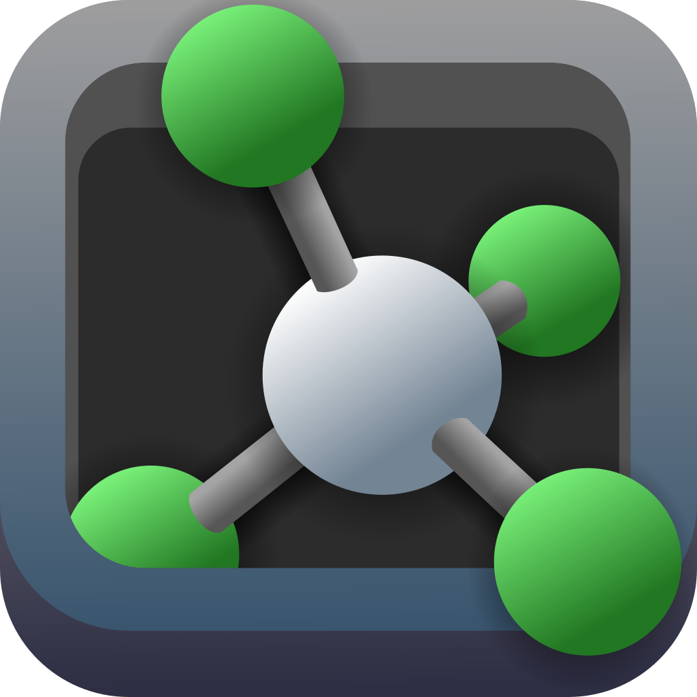

 PyMOL
{kind=link}
Note
This page is adapted from the group document, “PyMOL Intro”, written by Elle Bartlett. PyMOL logo: https://sourceforge.net/p/pymol/code/HEAD/tree/trunk/pymol/data/pymol/icons/icon2.svg.
Installation
At https://pymol.org/, click download now. Click on the corresponding installation package for your device. Follow the corresponding instructions. Save the license file anywhere on your device (email Dr. Thompson or ask one of the group members for the latest PyMOL license). When you open PyMOL, you will see a popup called “activation”. Click browse for license file and navigate to wherever you have saved it.
Basics: GUI
Opening a Trajectory
- Opening a trajectory or visualization state can be done in three separate ways:
You can open a file via File -> Open and select the file you want to view.
Drag and drop file into PyMOL itself.
Use the command
load_traj(see https://pymolwiki.org/index.php/Load_traj).
Note
Large files may take some time to load. Accepted file types are given in https://pymol.org/dokuwiki/doku.php?id=format.
Note
Any dcd trajectories require loading of a topology file, commonly .pbd or .cif. For .xyz files, single frames can be loaded as a topology file as well.
Working with an Object
When making a selection:
select name XwhereXis your naming convention in the trajectory.You can also select with the mouse and use the right margins to adjustcolors or labels.
Changing representation on right panel:
There are rows that exist within the panel for each loaded state in PyMOL. You can use the “all” section to change the visualization, color, labels, etc. for all species in the system. As more trajectories are added, specific sites can be rendered differently than others.
S (show) -> as -> (select options here)
C (color) -> (select color palette here)
Common Commands
hide lineshides all bonds connecting atomsshow sticksshows bonds as sticks (easier to see bonds explicitly)show spheresshows all atoms as spheresset stick_radius, 0.1, (all)sets the stick radiusset sphere_scale, 0.25, (all)sets the sphere radius
Saving Images
On the top toolbar, within File. You can select “Export Image As” or “Export Movie” for frame images or trajectories, respectively.
Draw/Ray on the top of the right margin for specifications of specific images.
Display on the top toolbar has options for resolution, background, etc.
Scripting
Command
run path/to/script/example.pywill run a script of interest.An example script can be found within Elle’s cluster profile:
/kuhpc/work/thompson/pymol/.For an online example: https://pymolwiki.org/index.php/DrawBoundingBox